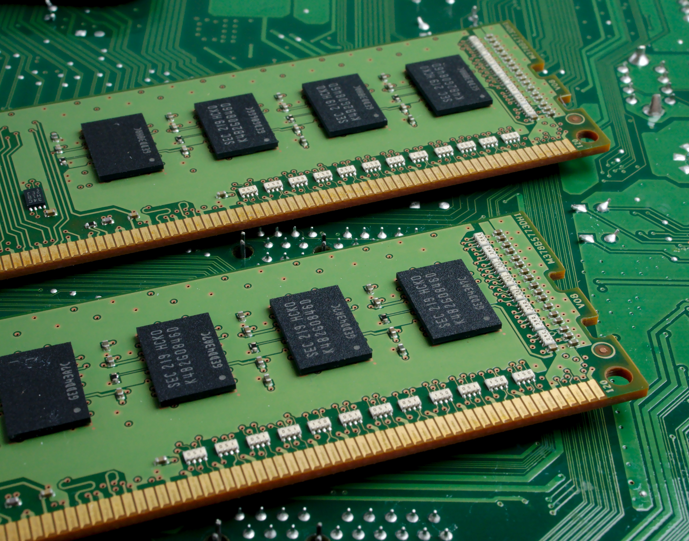

A module is a separate unit of software or hardware. Typical characteristics of modular components include portability, which allows them to be used in a variety of systems, and interoperability, which allows them to function with the components of other systems. The term was first used in architecture.
1) In computer programming, especially in older languages such as PL/1, the output of the language compiler was known as an object module to distinguish it from the set of source language statements, sometimes known as the source module. In mainframe systems such as IBM's OS/360, the object module was then linked together with other object modules to form a load module. The load module was the executable code that you ran in the computer.
Modular programming is the concept that similar functions should be contained within the same unit of programming code and that separate functions should be developed as separate units of code so that the code can easily be maintained and reused by different programs. Object-oriented programming is a newer idea that inherently encompasses modular programming.
2) In computer hardware and electronics, a module is a relatively compact unit in a larger device or arrangement that is designed to be separately installed, replaced, or serviced. For example, a single in-line memory module is a unit of random access memory (RAM) that you can add to a personal computer.